Erronka honetan, OSI ereduaren lehen bi mailak landu ditugu: 1. maila fisikoa eta 2. maila, datu-loturakoa. Sare-konexioa osatu dugu, datuak hainbat formatutan kodetu ditugu eta webgunea hari gabeko gailu batetik probatu dugu.
Lehenik, gure taldeak egindako sare-kableak patch panelera konektatu ditugu, eta handik switchera. Ondoren, sisteman sartzeko pasahitzetako bat ASCII kode bihurtu dugu. Datu horiei CRC-6-GSM errore-kontrol kodea gehitu diegu, polinomio hau erabiliz: x^6+x^5+x^3+x^2+x+1.
Datuak prestatu ondoren, dagokion modulazioa aukeratu eta marraztu dugu —adibidez, ASK, PSK edo FSK—, eta Manchester kodeketaren irudikapena ere egin dugu. Azkenik, marrazkiak webgunera igo ditugu eta webgunea telefono mugikor edo eramangarri baten bidez probatu dugu.
Gure lana RJ45 ar konektorea duen sareko kable bat prestatzea izan da. Kablearen mutur batean RJ45 ar konektorea muntatu dugu, eta beste muturra patch panelera konektatu dugu.
- UTP sare-kablea
- RJ45 ar konektorea
- Konektoreak krispatzeko tresna
- Kable-ebakitzailea edo guraizeak
1. Kablearen muturretik kanpoko estalkia kendu dugu.
2. Barruko hari-bikoteak askatu eta koloreen arabera bereizi ditugu.
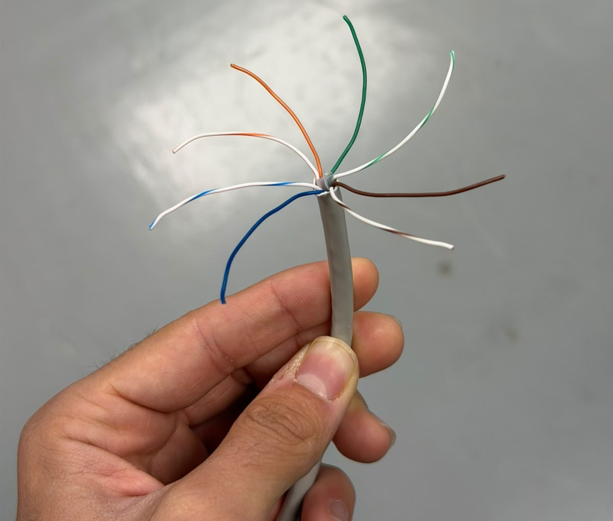
3. Hariak B arauaren ordenan lerrokatu ditugu: zuri-laranja, laranja, zuri-berdea, urdina, zuri-urdina, berdea, zuri-marroia eta marroia.
4. Hari-muturrak luzera berean moztu ditugu, Hariak RJ45 konektorean sartu ditugu, ordena mantenduz.
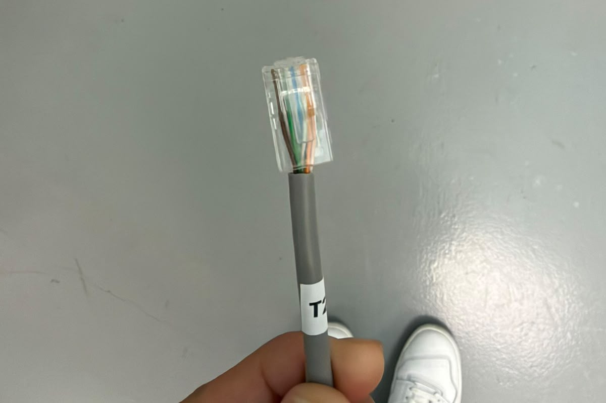
6. Konektorea krispagailuan jarri eta kableari finkatu diogu eta hariak konektorean behar bezala sartuta eta finkatuta geratu direla begiratu dugu.
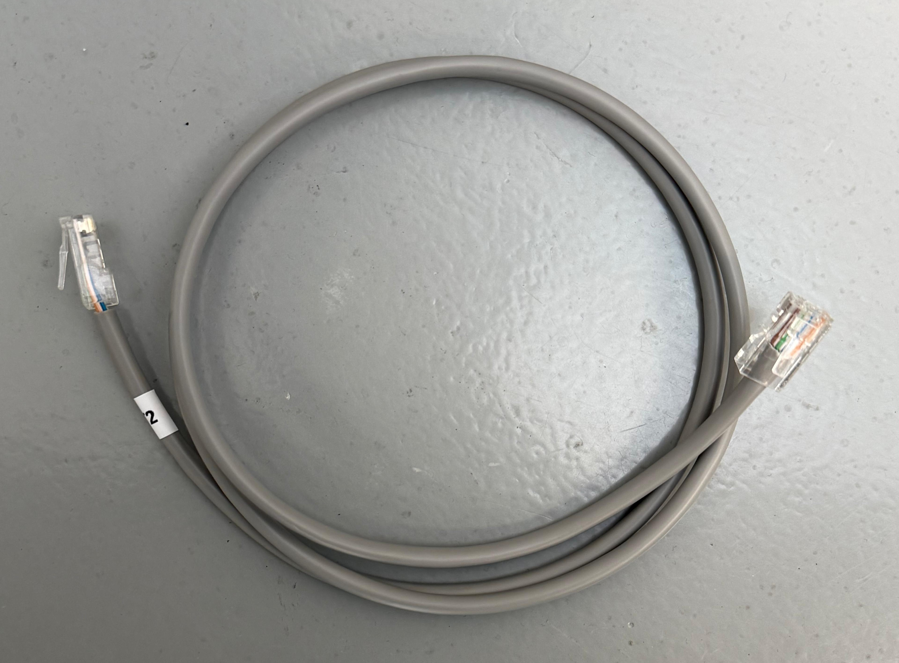
Gure lana sareko kable bat prestatzea eta haren muturrak konektatzea izan da. Mutur batean RJ45ko hormako hartune batean konektatu dugu, eta beste muturra patch panel batean.
- UTP sare-kablea, lau bikote bihurriturekin
- RJ45ko hormako hartunea
- Patch panela
- Krone tresna edo kable-zulagailua
- Kable-ebakitzailea edo guraizeak
1. Kablea neurtu eta moztu dugu.
Behar genuen luzera neurtu eta kablea moztu dugu.
2. Kanpoko estalkia kendu dugu.
Kablearen muturretik estalki grisa kontu handiz kendu dugu, barruko hariak ez kaltetzeko.
3. Hari-bikoteak banandu ditugu.
Barruko lau bikoteak askatu eta koloreen arabera bereizi ditugu: laranja, berdea, urdina eta marroia, bakoitza hari zuri marradunarekin.
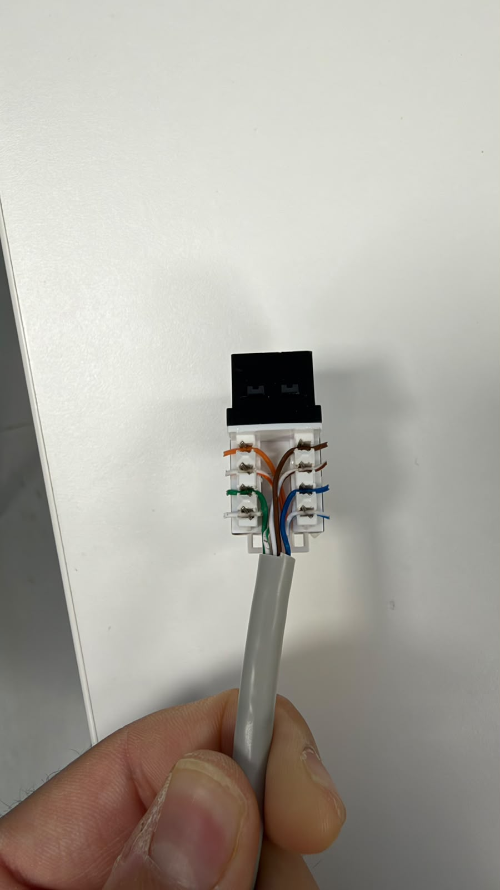
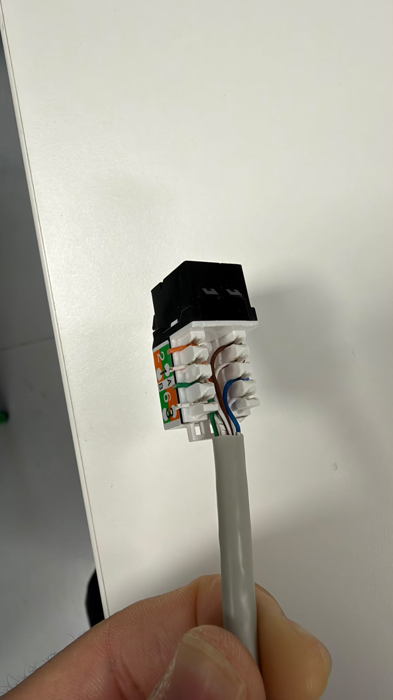
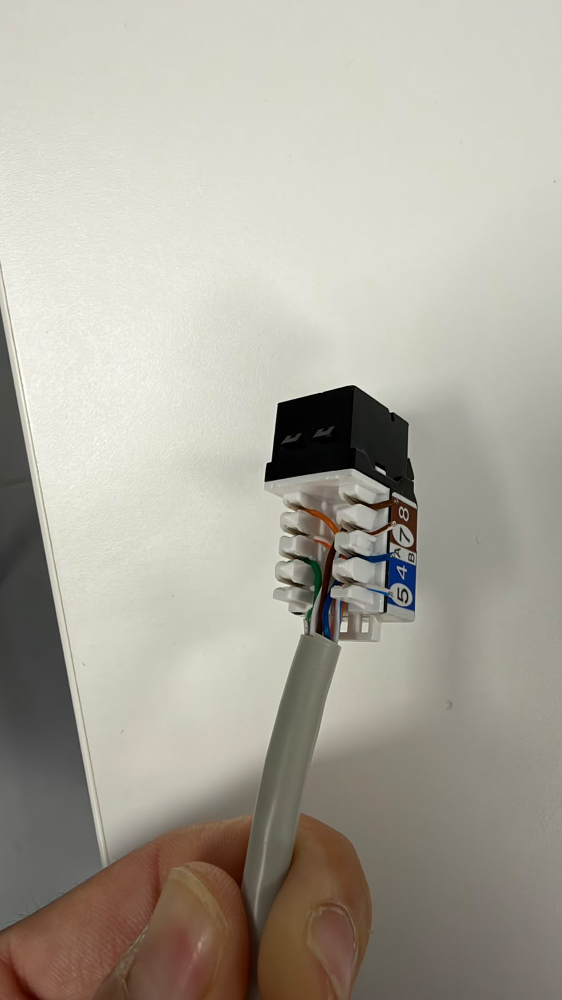
4. Kolore-ordenari jarraitu diogu.
Hariak RJ45 hartuneko eta patch paneleko kolore-marken arabera kokatu ditugu. B araua erabili dugu bi muturretan.
5. Hariak hartunean finkatu ditugu.
Hari bakoitza dagokion zirrikituan jarri eta krone tresnarekin sakatu dugu. Horrela, kontaktuek hariak finkatu dituzte eta soberan zegoen zatia moztu dugu.
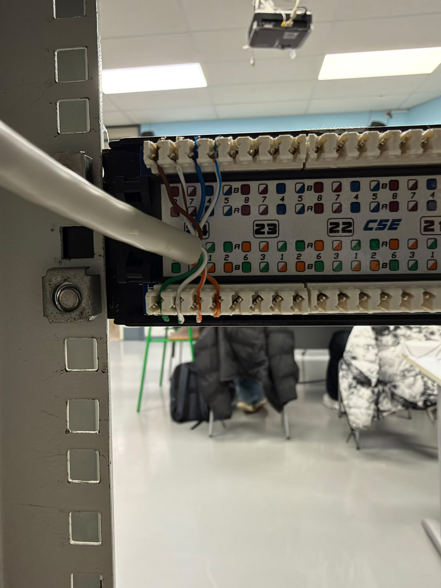
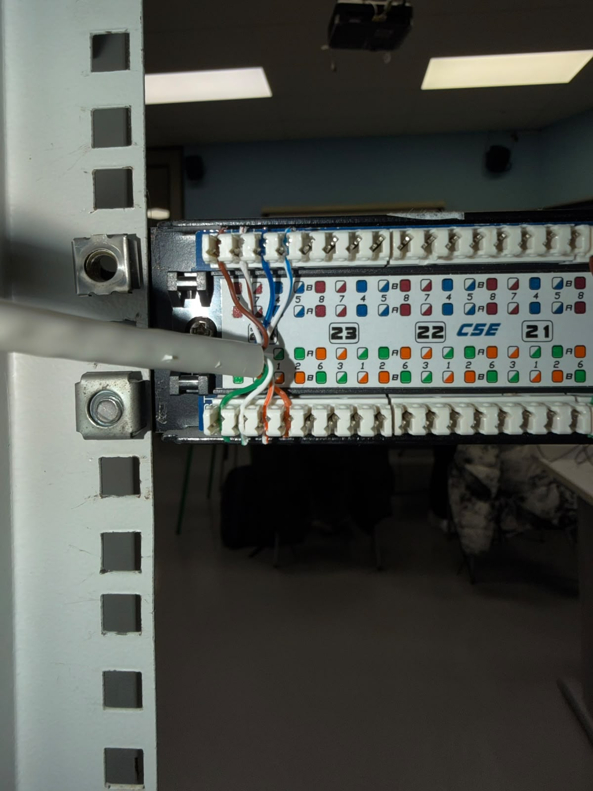
6. Beste muturra patch panelera konektatu dugu.
Kablearen beste muturreko hariak patch paneleko kolore-markei jarraituz kokatu eta finkatu ditugu.
7. Konexioak egiaztatu ditugu.
Hariak behar bezala sartuta eta finkatuta zeudela begiratu dugu.
Egin dugun lehenengo gauza pasahitz bat sortzea izan da, inplementatuta ditugun pasahitzen politikak kontuan hartuta. Hau da erabiltzea erabaki dugun pasahitza: "Admin1@". Gure helburu nagusia ahalik eta segurtasun mailarik handiena lortzea da. Gero letra bakoitza hartu eta hamartarrera pasatu dugu, hau da emaitza:
- A: 65
- d: 100
- m: 109
- i: 105
- n: 110
- 1: 49
- @: 64
Zenbaki hamartarra atera ondoren, zenbaki bitarrera pasatu behar dugu, gero CRC-6-GSM egin ahal izateko. Hau da emaitza:
- A: 01000001
- d: 01100100
- m: 01101101
- i: 01101001
- n: 01101110
- 1: 00110001
- @: 01000000
Letra bakoitzaren bitarra lortzeko prozesu hau jarraitu dugu, hau da, dezimaletik bitarrera pasatako "A" letra:
Zatiketa | Zatidura | Hondarra
65 % 2 | 32 | 1
32 % 2 | 16 | 0
16 % 2 | 8 | 0
8 % 2 | 4 | 0
4 % 2 | 2 | 0
2 % 2 | 1 | 0
1 % 2 | 0 | 1
Hondarrak lortutakoan, azkenetik hasita lehenengora arte ordenatuko ditugu. Kasu honetan horrela geratzen da 01000001.
ASCII kodean 8 bit erabiltzen direnez, 0 bat gehitu dugu hasieran.
Prozedura bera erabili dugu pasahitzaren gainerako karaktereekin.
Karaktere guztiak bitarrera bihurtu ondoren, ordenan jarri ditugu, ilara bakarrean.
Espaziorik gabe:
01000001011001000110110101101001011011100011000101000000
Bitarrak ilaran jarri ondoren, formula nolakoa den begiratu behar dugu. Kasu horretan, formula honelakoa da:
x^6 + x^5 + x^3 + x^2 + x + 1
Horren emaitza bitarrean 1101111 da. Formula horrek 6 bitekoa izango dela adierazten du. Horregatik, gure kode bitarraren ondoan beste 6 zero jarri ditugu. Ondoren, zenbaki bitarrak jarri eta atera dugun zenbakiaz zatitu behar dugu.
Prozesu osoa egin ondoren, emaitza bat emango digu. Gure kasuan, 101001 agertuko da, ez ditugu zenbaki guztiak erabiliko, 6 bit bakarrik behar ditugulako.
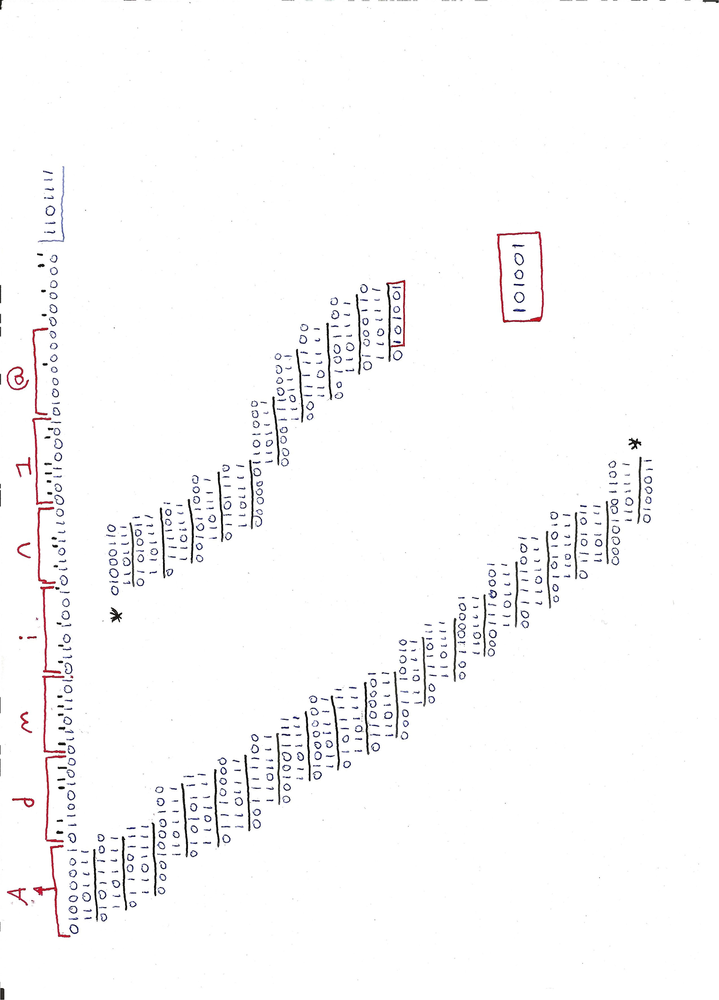
Egiaztapena egiteko, gure kasuan eman diguzun 101001 emaitza hartuko dugu, zenbaki bitar guztiak jarriko ditugu berriro, baina, lehen jarri genituen 6 zeroak jarri beharrean, kasu honetan eman diguzun 101001 emaitzarekin ordezkatuko ditugu.
Emaitza 0000000 bada, informazioa ondo egiaztatuko da; hori ateratzen ez bada, ez da ondo aterako.
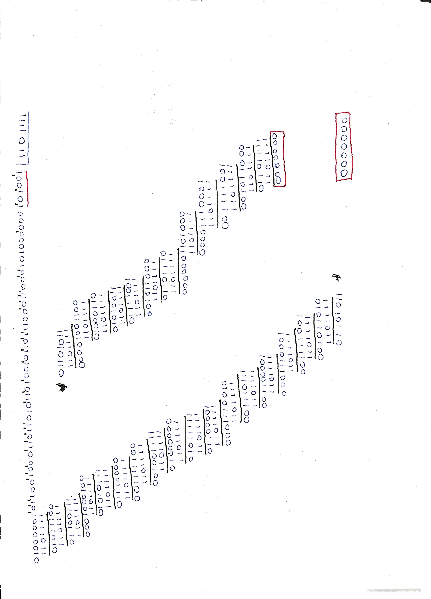
Gero, ditugun zenbaki bitar guztiak hartu ditugu, gure emaitza ere jarriko dugu, formula hau erabiliz: PSK(2)-ASK(2)-FSK(2).
Grafikoak atera behar ditugu. Formulak adierazten digu 6 biteko grafikoak izan behar direla. PSK-k hondoa non hasten den adierazten digu, ASK-k hondoak izan behar duen altuera eta FSK-k zenbat sakonune izan behar dituen adierazten digu.
Hori jakinda, gure kode bitarra lehenengo 6 bitak hartuz joango gara, gero hurrengoekin jarraituko dugu eta grafiko bat aterako dugu. Gure kasuan 62 bit ditugu eta ez digu zenbaki zehatzik emango grafikoentzat. Horregatik, azkenean 4 zero gehitu ditugu hori egin ahal izateko.
Horrela geratu zaizkigu grafikoak:
PSK, ASK eta FSK grafikoak:
Ondoren, Manchester normalaren eta Manchester diferentzialaren grafiko batzuk egin ditugu.
Bit bakoitzak trantsizio bat du erdian: 0a altutik baxura doa, eta 1a baxutik altura.
Manchester normalaren grafikoa:
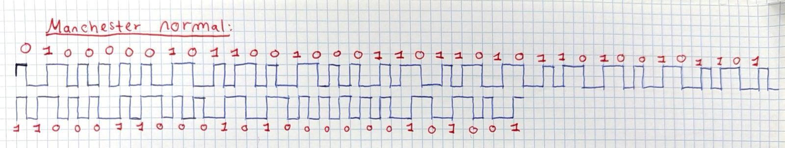
0 bada, geziak norabide berdinarekin geratzen da, 1 bada, geziak norabidea aldatzen du.
Grafikoarekin hasteko, maila baxua aukeratu dut.
Manchester diferentzialaren grafikoa:
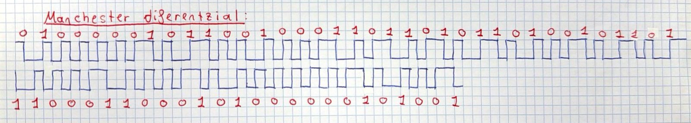
Lehenik eta behin, WiFi-a aktibatu dugu gure routerrean, eta izena eta pasahitza eman diogu
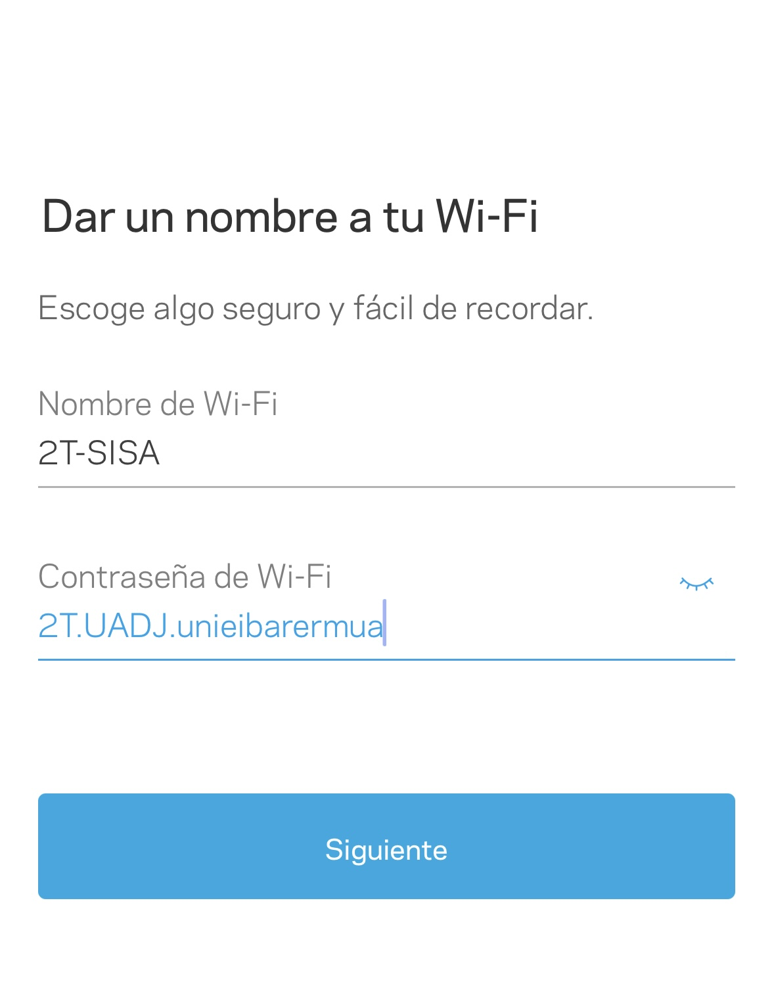
Gero, gure mugikorretik WiFi-ra konektatu gara, zerbitzaria piztu dugu, eta zerbitzaritik gure mugikorrera ping-a egin dugu. Halaber, gure mugikorretik, zerbitzarian dugun html ip-a jarriko dugu, errematatzeko
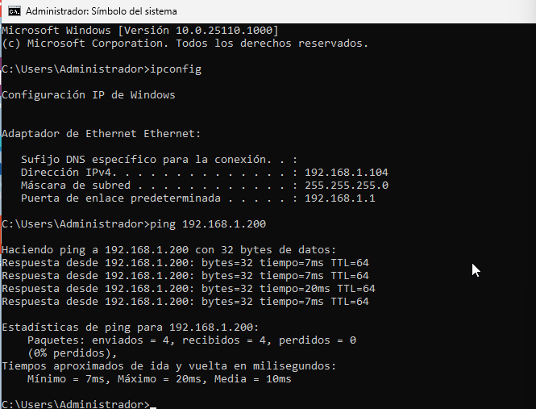
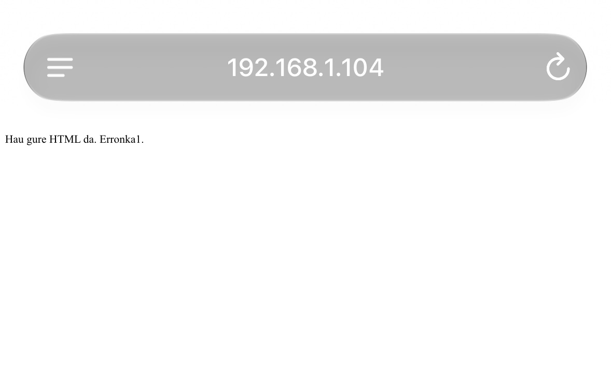
Hau da gure sarea lucidchart-en marrastuta.
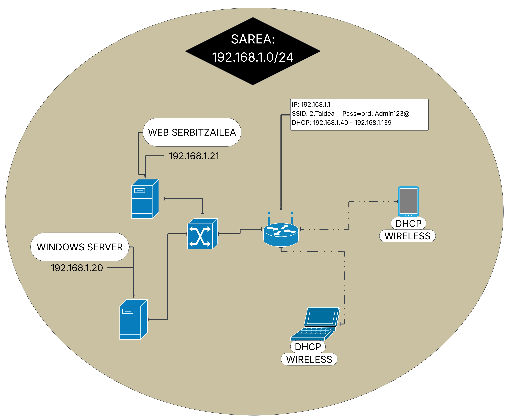
Hau da gure sarearen egindako simulazioa cisco packet tracerren.
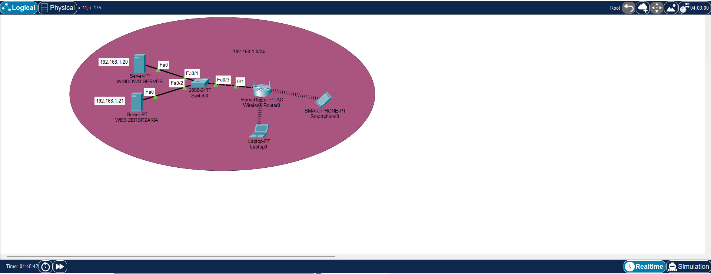